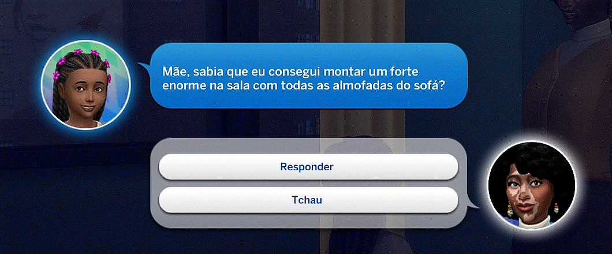
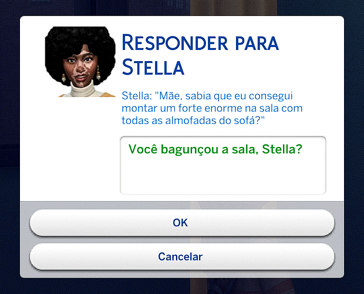

Mod para The Sims 4 · grátis
Você escreve. O Sim responde.
Chega de falas prontas. Com o Chit Chat você digita o que quiser e o Sim responde com a idade, o humor e o jeito dele.
Versão 1.0 · Windows · em português
Mãe, sabia que eu consegui montar um forte enorme na sala com todas as almofadas do sofá?
Você bagunçou a sala, Stella?
Ah, mãe, mas ficou super legal, parece um castelo de verdade! Eu juro que ajudo a guardar tudo depois.
Depois nada, vá arrumar agora!
Como aparece no jogo
A conversa usa as janelas do próprio The Sims, com o rostinho dos dois Sims.


O que o Chit Chat faz
Cada Sim fala do seu jeito
Criança fala de escola e brincadeira, adulto de trabalho e contas, idoso dos netos. Traços e humor mudam o tom.
Família chama pelo apelido
O Sim sabe quem é mãe, vó, primo ou namorado.Oi, filha! Já fez o dever de casa?
A conversa mexe na relação
Papo bom aumenta a amizade, grosseria diminui. Os dois Sims saem da conversa com uma emoção: feliz, brincalhão, irritado…
Eles fazem o que combinaram
Depois do Tchau, o Sim vai. Criança costuma obedecer; adulto só faz se quiser.Vai tomar banho, filho. — Ah, mãe… tá bom, já vou!
Ninguém sabe que é um jogo
Pergunte sobre o diamante verde na cabeça e veja a cara de confusão.
Funciona mesmo sem a IA
Sem internet ou sem chave, os Sims usam falas prontas, e o jogo segue normal.
Fiz o Chit Chat porque queria que meus Sims conversassem comigo de verdade, e não só soltassem um balão com um desenho. Se você postar uma conversa engraçada, usa a hashtag #ChitChatSims, que eu quero ver!
@Finight
Como instalar
Instala como qualquer mod. A parte da inteligência artificial é grátis e você só configura uma vez.
Baixe e extraia o .zip
Dentro tem
Finight_ChitChat.ts4scripteFinight_ChitChat.package.Coloque os dois arquivos na pasta Mods
Documentos › Electronic Arts › The Sims 4 › Mods. Pode ser dentro de uma subpasta, mas no máximo uma.
Ative os mods no jogo
Opções › Opções do Jogo › Outros: ative Conteúdo personalizado e mods e Mods de script permitidos. Reinicie o jogo.
Pegue sua chave grátis da IA
Entre em aistudio.google.com/apikey com sua conta Google e clique em Create API key.
Cole a chave no jogo
Com o jogo aberto, aperte Ctrl + Shift + C: aparece uma barrinha no topo da tela, onde se digitam os códigos. Escreva
chitchat_key, aperte Enter e cole a chave na janela que abrir. Fica salva para sempre.Converse!
Na mesma barrinha, digite
cce alguém do lote puxa assunto.
Prefere em imagem? Abra o guia ilustrado.
Os códigos
Aperte Ctrl + Shift + C no jogo, escreva o código e aperte Enter. Quando o save carrega, uma notificação lembra os códigos e diz se a IA está ativa.
Alguém aleatório do lote puxa assunto.
A Maria puxa assunto (ela precisa estar no lote).
Atalho: só o primeiro nome do Sim também funciona.
Abre a janela para colar ou trocar a chave da IA.
Dúvidas
É grátis mesmo?
Sim. O mod é grátis e a chave do Google também. O plano grátis tem um limite de mensagens por dia; se acabar, os Sims usam falas prontas até o dia seguinte.
Precisa de internet?
A IA precisa que o computador esteja conectado. Pode jogar no modo offline do jogo sem problema. Sem internet, o mod continua funcionando com falas prontas.
Tenho que colocar a chave toda vez?
Não. Ela fica salva num arquivo ao lado do mod. Só precisa de novo se você trocar de chave ou apagar a pasta do mod.
O Sim só responde com falas prontas. E agora?
Digite chitchat_key para ver se a chave está configurada e confira a internet. Se você bloqueou o The Sims no Firewall do Windows, libere o TS4_x64.exe: a IA usa a conexão do jogo.
Funciona no Mac?
Por enquanto não. O mod usa a conexão segura do Windows para falar com a IA.
O jogo trava enquanto o Sim pensa?
Pode dar uma travadinha de 1 a 3 segundos enquanto a resposta chega. É normal.
E a minha privacidade?
As mensagens vão para a IA do Google, que no plano grátis pode usá-las para melhorar os produtos dele. Não escreva dados pessoais nas conversas e não compartilhe sua chave.